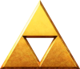

A linha do tempo da franquia The legend of Zelda
Com mais de 15 jogos que criam uma linha do tempo confusa, The Legend of Zelda desafia os fãs a entenderem a ordem dos jogos
Pode ter demorado anos, mas a Nintendo finalmente divulgou uma linha do tempo oficial das aventuras de Link por Hyrule. Agora, é possível curtir os jogos em uma ordem mais aceitável, mesmo que todos tenham uma história única. Os fãs mais assíduos podem procurar pelas referências e fazer as ligações entre cada obra, aumentando mais o nível de imersão. Descubra a linha do tempo de The Legend of Zelda.
índice
Entendendo a linha do tempo
- The Legend of Zelda: Skyward Sword
- The Legend of Zelda: The Minish Cap
- The Legend of Zelda: Four Swords
- The Legend of Zelda: Ocarina of Time
O Herói foi derrotado
- The Legend of Zelda: A Link to the Past
- The Legend of Zelda: Link's Awakening
- The Legend of Zelda: Oracle of Ages / Seasons
- The Legend of Zelda: A Link Between Worlds
- The Legend of Zelda: Tri Force Heroes
- The Legend of Zelda
- Zelda II: The Adventure of Link
O Herói venceu
A era da criança
- The Legend of Zelda: Majora's Mask
- The Legend of Zelda: Twilight Princess
- The Legend of Zelda: Four Swords Adventures
A era do adulto
- The Legend of Zelda: The Wind Waker
- The Legend of Zelda: Phantom Hourglass
- The Legend of Zelda: Spirit Tracks
- Hyrule Warriors: Age of Calamity
- The Legend of Zelda: Breath of the Wild
- The Legend of Zelda: Breath of the Wild 2
Personagens
